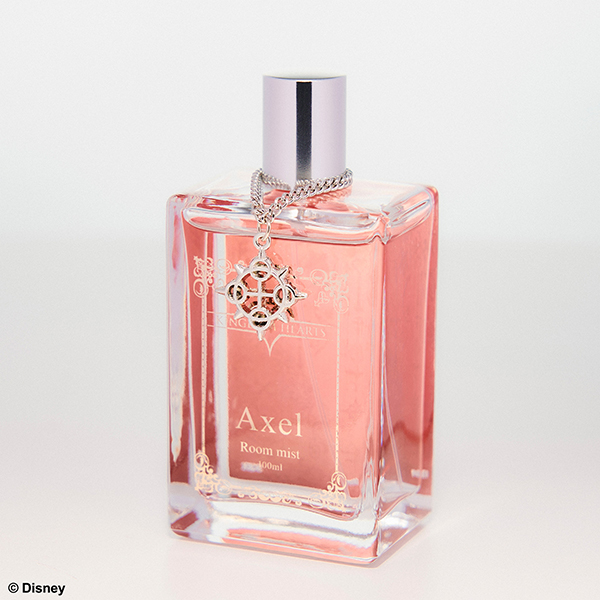
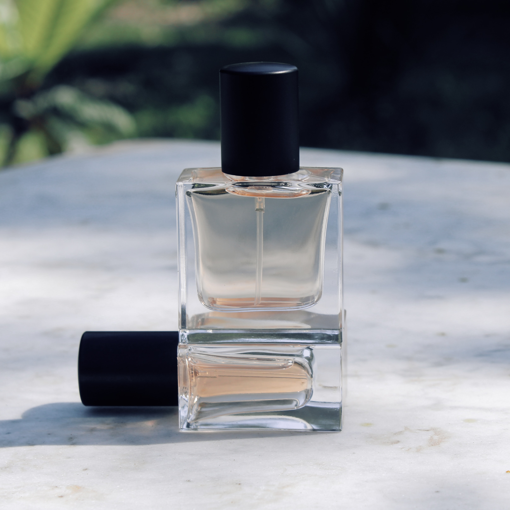
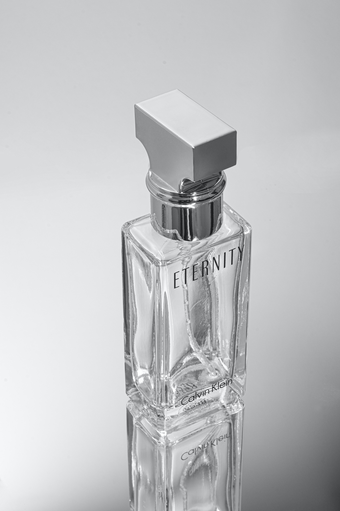

The floral scent family is one of the most common families and are used in many well-known perfumes.
They usually smell like fresh-cut flowers or have a powdery note to them. Floral scents are perfect for the spring and summertime.
Floral scents are most often used in women's fragrances, although they are occasionally used in mens as well
More About

The oriental fragrance family consists of rich exotic scents.
When you think of oriental scents think herbs and spices or dry, powdery, resin notes. Opulent and heady, these notes are often times softened with amber or sweet notes.
It's common to describe this family as exotic and seductive. Soft, Sweet, Woddy everykind has there own vibes.
More About

Woody perfumes are usually warm and opulent, mixing incense-like fragrances like sandalwood and patchouli with drier notes like cedar.
To tone down the warmth of these notes, fragrances will sometimes incorporate some fresh scent notes like citrus or floral.
Notes in this family can be described as coniferous or woody and bitter.
More About
The fresh scent family encompasses clean bright scents. Herby, citrusy and oceanic scents all fall into this category.
More often used in men's fragrances than women's fragrances, fresh scents are paired with spicy notes to create a more robust fragrance.
Aromatic, tart notes can also be found mixed with zesty or fruity scents.
More About